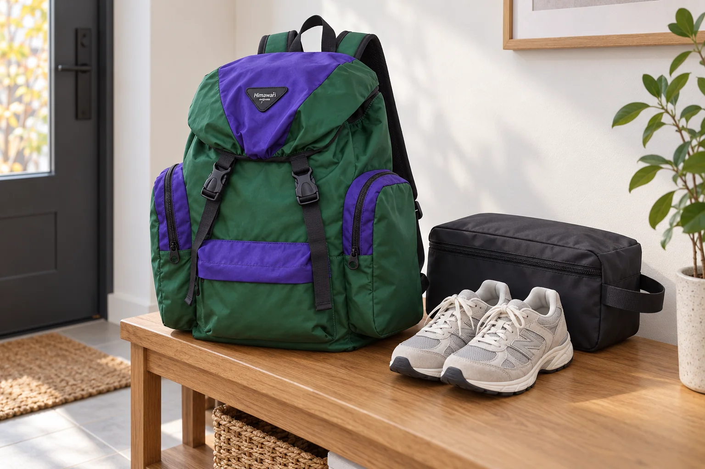

갈아 신은 신발까지 생각하는 외출

운동화를 한 켤레 더 챙기는 날에는 출발 준비만 보면 신발이 깨끗한 물건으로 보입니다. 그러나 현장에서 갈아 신은 뒤 가방에 들어갈 것은 밖에서 신었던 신발일 수 있습니다. 밑창에 흙이 묻거나 겉면에 물기가 있으면 아침과 같은 자리로 되돌려 넣기 어렵습니다. 여분의 신발을 운반할 방법은 두 상태를 함께 놓고 생각해야 합니다. 갈 때 편하게 들어가는지와 올 때 다른 물건과 분리되는지가 모두 필요합니다.
두 짝을 각각 들었을 때의 크기와 주머니에 담았을 때의 크기는 다릅니다. 신발을 실제로 사용할 주머니에 넣고 닫아본 뒤 외형을 확인하세요. 두 짝을 나란히 둘지 방향을 바꿔 포갤지는 신발의 형태와 주머니에 따라 정합니다. 밑창이 다른 물건 쪽으로 드러나지 않고 끈 끝이 입구에 걸리지 않도록 살펴봅니다. 가방을 닫기 위해 신발을 무리하게 눌러야 한다면 그 묶음의 운반 방법을 다시 고르는 편이 낫습니다.
신발주머니가 차지하는 실제 자리
신발주머니를 넣을 자리에는 이미 평소의 짐이 있습니다. 책과 서류, 충전 도구가 들어 있는 백팩이라면 신발 한 묶음을 추가한 상태에서 모두 꺼내놓고 배치를 봅니다. 서류 모서리 위에 주머니가 올라가는지, 신발의 단단한 부분이 다른 물건을 누르는지 확인하세요. 물건이 가방 안에 들어갔다는 사실만으로 서로 닿는 면까지 정리된 것은 아니므로 접촉하는 위치를 실제로 보는 과정이 필요합니다.
신발만 넣을 때는 여유가 있어도 하루 동안 필요한 다른 짐까지 들어가면 입구를 여닫기 어려울 수 있습니다. 아침에 운동화 주머니를 먼저 넣고 나머지를 채우는 경우에는 현장에서 신발을 꺼내려면 무엇을 먼저 빼야 하는지도 확인합니다. 신발을 교체할 장소에 짐을 펼칠 공간이 없다면 가방 깊은 곳에 넣는 방식이 번거로울 수 있습니다. 신발을 별도의 손가방으로 들고 개인 소지품은 백팩에 남기는 선택도 검토할 만합니다.
주머니는 깨끗한 물건과 밑창 사이를 나누는 운반 도구로 생각하면 됩니다. 마른 신발을 담을 때의 상태만 보고 젖은 신발까지 같은 방식으로 담아도 된다고 가정하지는 않습니다. 주머니의 사용 용도와 닫힘을 확인하고, 귀가할 때 물기가 많을 수 있다면 다른 포장이나 별도 운반을 준비합니다. 잠깐 분리해 옮기는 방식과 집에 와서 계속 보관하는 방식은 따로 정해야 정리가 미뤄지지 않습니다.
장소에서 갈아 신는 순서
신발을 바꾸는 장소의 안내를 보면 실제 준비할 범위가 정해집니다. 개인 물건을 둘 곳이나 신발을 보관할 위치가 있는지, 사용 뒤 어떤 신발을 들고 나와야 하는지 확인하세요. 갈아 신는 자리에서는 백팩을 넓게 펼치기보다 신발주머니만 먼저 꺼낼 수 있도록 준비하면 됩니다. 주머니가 다른 소지품에 끼어 있다면 지갑이나 전자기기를 공용 벤치 위에 놓게 되므로 출발 전에 꺼내는 순서를 바꿔볼 수 있습니다.
Himawari No.1111 제품 정보에는 외부 크기가 가로 43 × 세로 47 × 폭 24cm로 기록되어 있습니다. 신발 운반을 검토할 때 이 수치는 가방의 겉 크기를 비교하는 자료입니다. 신발의 사이즈 표기만으로 주머니의 부피를 알 수 없고, 외부 치수만으로 그 주머니의 수납을 보장할 수도 없습니다. 실제 신발을 담은 묶음과 가방 입구, 함께 가져갈 짐을 대조해 결정해야 합니다.

현장에서 벗은 신발은 주머니에 넣기 전에 밑창과 끈을 한 번 봅니다. 끈이 길게 늘어져 있으면 입구를 닫을 때 함께 끼일 수 있으므로 자연스럽게 안쪽으로 정리합니다. 흙이 묻었다면 장소의 규칙에 맞게 처리하고, 물기가 있는 신발을 마른 여벌과 바로 맞대지 않도록 운반 위치를 나눕니다. 신발을 정리하는 동안에도 다른 사람이 지나는 통로를 비워둘 수 있는 자리를 선택하세요.
여벌과 원래 신던 신발의 형태가 크게 다르면 돌아오는 묶음이 더 커질 수 있습니다. 예를 들어 얇은 신발을 꺼내고 두꺼운 운동화를 넣는 일정이라면 빈 주머니가 아니라 돌아올 신발을 기준으로 처음부터 확인합니다. 이것은 특정 조합의 수납 시험이 아니라 준비할 때 놓치기 쉬운 차이입니다. 사용 후 크기가 커지는 묶음을 가방에 넣을 공간이 없으면 별도 운반 방법을 출발 전에 정할 수 있습니다.
귀가한 신발은 가방에서 먼저 꺼내기
집에 들어오면 주머니째 백팩에 남겨두기보다 신발을 먼저 꺼냅니다. 그다음 주머니의 바닥과 안쪽에 흙이나 물기가 남았는지 확인하고 각각의 관리 안내에 따라 정리합니다. 주머니를 쓰더라도 가방 안쪽에 먼지가 옮겨졌을 수 있으므로 주변 물건의 상태를 함께 봅니다. 신발을 담았던 자리에는 다음날의 종이나 옷을 바로 넣기 전에 남아 있는 것이 없는지 확인하는 정도가 필요합니다.
같은 외출을 반복한다면 다음 준비를 위해 실제로 불편했던 동작을 하나만 기록해볼 수 있습니다. 신발이 너무 깊숙이 있었는지, 주머니를 닫을 때 끈이 걸렸는지, 귀가할 신발이 예상보다 컸는지를 구체적으로 남깁니다. 다음번에는 그 부분만 바꾸면 됩니다. 가방을 더 큰 것으로 고르는 결정은 나머지 짐과 이동 방식까지 확인한 뒤에 할 수 있고, 별도 신발주머니를 드는 편이 더 간단한 일정도 있습니다.
계절이나 신발이 바뀌면 이전 배치를 그대로 믿지 않는 편이 좋습니다. 같은 발 크기여도 신발의 두께와 바깥 형태가 다르며, 겉옷이 추가되면 백팩 안의 자리도 달라집니다. 다음 외출 전에 사용할 신발을 주머니에 담아보고 현장에서 꺼낼 방향을 확인하세요. 백팩에 모든 것을 넣는 목표보다, 깨끗한 개인 짐과 사용한 신발을 구분한 채 집까지 돌아오는 운반 방법을 정하면 됩니다.